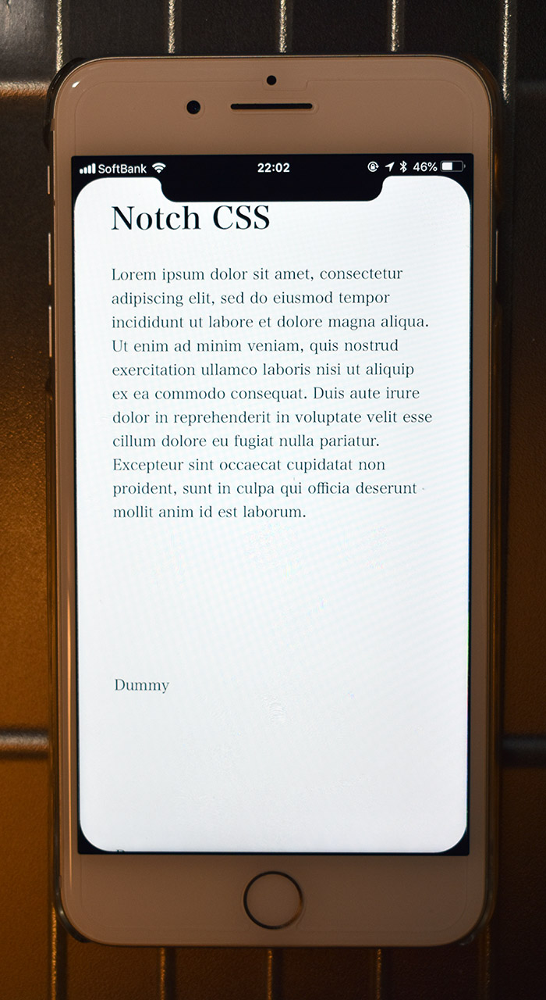

iPhone XS のノッチが気になったので CSS で再現してみた
iPhone XS・XS Max・XR が発表され、ついにノッチ付きの iPhone ばかりになったので、未だ iPhone7Plus 使いの私はノッチがあるスクリーンに興味が出てきた。
そこで今日は、CSS でノッチ風の「影」を作り、iPhone7Plus でもノッチがあるスクリーンを体験してみようという次第。
以下のデモページを「ホームに追加」し、フルスクリーンモードで閲覧してみて欲しい。画面上部にノッチ、画面四隅に角丸風な「黒い曲線」が配置されているだろう。
ノッチ部分は border-radius で再現した。画面上部になめらかに繋がるよう、ノッチ部分の左上・右上の角のところには ::before・::after 疑似要素で「逆角丸」な要素を配置した。
「逆角丸」と勝手に命名したが、border-radius を使用した時は、そのボックスの中に背景色が当たるが、今回作成したい「角丸なコーナー」は、border-radius で塗られない、丸まった外側の部分に背景色を付けたいのだ。
iPhoneX を CSS で再現した CodePen なども見てみたが、clip を使ったサンプルより、今回採用した radial-gradient() による実装の方が分かりやすく容易だった。
例えば、ノッチの左上部分の曲線は、以下のようなコードで実現した。
background: radial-gradient(circle at bottom left, transparent, transparent 70%, #000 71%, #000);
radial-gradient() で円周状のグラデーションを作り、circle at bottom left で要素の左下を中心点にする。そして 70% ぐらいのところまで透明にし、アンチエイリアス狙いで 71% のところから黒色に塗る (70% ちょうどから黒色にすると線がギザギザに見えてしまう)。画面四隅の曲線も同様に作っている。
その他詳細は実際のコードを見てみてほしい。
- ios-safari-web-test/notch-css.html at master · Neos21/ios-safari-web-test · GitHub
- Notch CSS … CodePen に同様のサンプルを配置。
ノッチや逆角丸のサイズ感は iOS Simulator で iPhoneX を開いて参考にしたが、可変幅にするのがダルかったので固定値にした。
「ホーム画面に追加」する場合、ステータスバーを非表示にはできないので、黒色にしてなじませる方針にした。
こうしてノッチ風ページが出来上がったので、iPhone7Plus で開いてみたところ…

…iPhone 側のベゼルが白いと意味分かんないです (涙